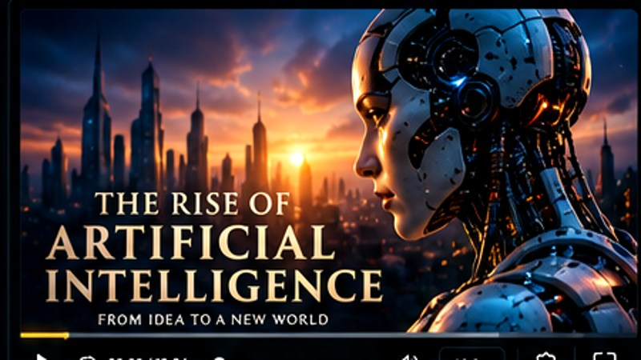

✦
KDocumentary Director
Multilingual voice, VO alignment and atmospheric score
Source / InputInput and scope
251 charactersAuto-save: design concept
Multilingual voice, VO alignment and atmospheric score
Narration & MusicPreview / review

Inspector & Advanced ControlsPresets ▾
Video type⌄
Length⌄
Narration language⌄
Scene style⌄
Reference consistency
Human scene review
Captions
Scene duration7 sec
ⓘ UI review only. Actual engine availability, voice catalog, quotas and generation settings must be verified during implementation. No feature is running.
Generated Audio · Waveform & VersionsPlayback, compare, save to project